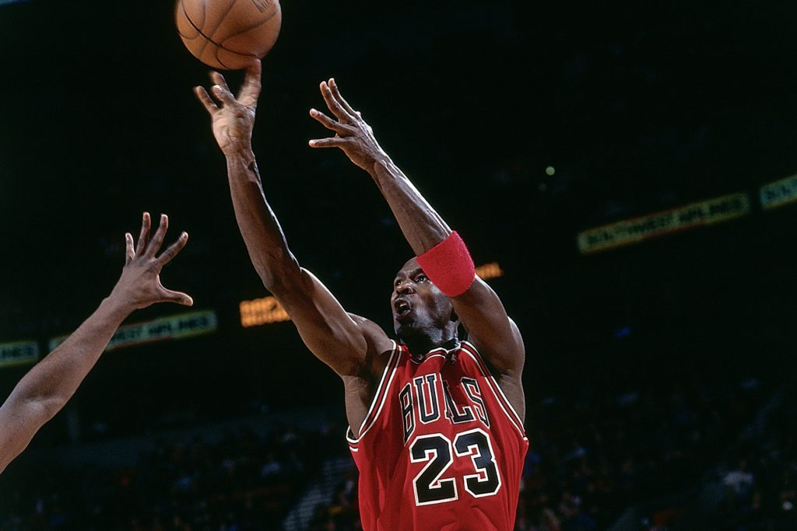
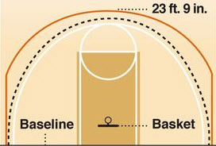

Defense and Offense
Learn how to defense and offense was used from the beginning of basketball and how it changed over time.
Introduction
In the game of basketball, there are only two major components to play the game. Defense and offense. There are several strategies for both ends of the floor which can be used to prevent a team from scoring or be used to easily score on a well defended team. First we will discuss the basics of defense and the defensive strategies.
Defense
When two teams move up and down the court, there will be a team on offense, which is the team that has possession of the ball, and the other team will be on defense. Now depending on the offense, each player on defense can stick on an offense player(man defense), or the whole team can be in a zone. Zone is used to close off the offense from going in easily. There are a couple of pros and cons for these types of defenses:
| Man Defense | Zone Defense | Combination Defense | |
|---|---|---|---|
| Pros |
|
|
|
| Cons |
|
|
|
| When to use |
|
|
|
Offense
Offense is intended for the use of scoring a basket and get shots up against an opponent. Offense is what gives teams points and determines who wins a game. There are multiple ways to use offense, but of course, it depends on the defense. Let's say you were playing a game of pick up basketball at your local park, depending on the players, most of the time, you wouldn't have to run plays on offense. Usually players like to run one-on-one basketball where they are isolated and don't like to shar the ball. Obviously not all players are like this and tend to pass the ball to wide open teammates and to move the score up. In school or in basketball leagues, coaches like to draw up plays because it organized in a way to score easily against a team with great defense. Before moving on, I will discuss how the point system works.
Scoring system
In a normal, organized game of basketball a shot within the 3 point line is considered a 2 point shot, and outside of the 3 point line is considered a 3 pointer. So, no matter where you are when you shoot(i.e full court) it will still be considered a 3 point shot and will not increase the points.
